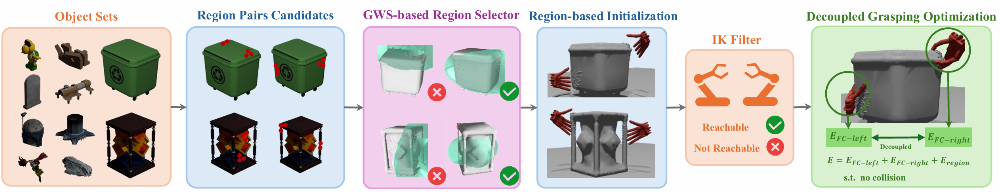
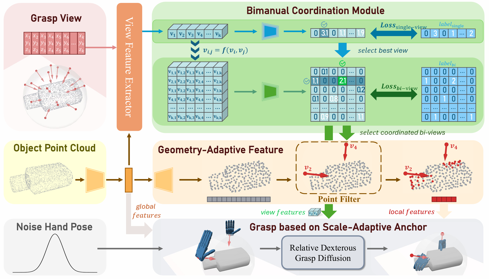
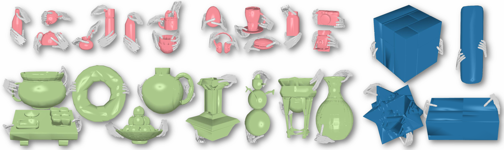

Bimanual dexterous grasping is a fundamental and promising area in robotics, yet its progress is constrained by the lack of comprehensive datasets and powerful generation models. In this work, we propose BiDexGrasp, consists of a large-scale bimanual dexterous grasp dataset and a novel generation model. For dataset, we propose a novel bimanual grasp synthesis pipeline to efficiently annotate physically feasible data for dataset construction. This pipeline addresses the challenges of high-dimensional bimanual grasping through a two-stage synthesis strategy of efficient region-based grasp initialization and decoupled force-closure grasp optimization. Powered by this pipeline, we construct a large-scale bimanual dexterous grasp dataset, comprising 6351 diverse objects with sizes ranging from 30 to 80 cm, along with 9.7 million annotated grasp data. Based on this dataset, we further introduce a bimanual-coordinated and geometry-size-adaptive dexterous grasping generation framework. The framework lies in two key designs: a bimanual coordination module and a geometry-size-adaptive grasp generation strategy to generate coordinated and high-quality grasps on unseen objects. Extensive experiments conducted in both simulation and real world demonstrate the superior performance of our proposed data synthesis pipeline and learned generative framework.


